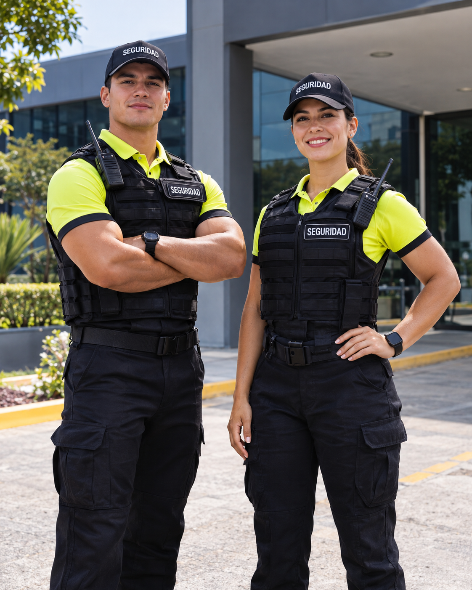

Prestaciones de ley
Conforme a las condiciones del puesto.
¡Buscamos guardias de seguridad! · Hombres y mujeres
Tenemos oportunidades en distintas zonas. Conoce los beneficios y empieza una conversación con Andy para encontrar opciones según tu disponibilidad.
Quiero postularme✓ Sin formulario tradicional✓ Preentrevista por chat✓ Revisión humana

Conoce los beneficios anunciados para estas vacantes. La disponibilidad y las condiciones específicas se confirman con el equipo de reclutamiento.
Conforme a las condiciones del puesto.
Conoce los detalles durante tu seguimiento.
Una de las ventajas de las vacantes anunciadas.
Información sobre pagos con reclutamiento.
Consulta las condiciones aplicables.
Opciones cercanas a tu domicilio, según disponibilidad.
Sin hojas interminables ni pasos confusos: platica con nuestra asistente para comenzar.
Andy se presenta, conoce tu nombre y te hace preguntas iniciales sobre tus preferencias y experiencia.
Conoce las vacantes disponibles y comparte la zona o turno que estás buscando.
Con tu autorización, se registra tu preentrevista para que la Lic. Astrid Araiza revise personalmente tu caso.
Soy la asistente virtual de Conexión Laboral 360. Voy a hacerte algunas preguntas para ayudarte a comenzar tu postulación. La revisión final la realiza nuestro equipo humano.
Abrir el chat en pantalla completa ↗
Tus datos se utilizan para gestionar tu interés en vacantes, con consentimiento y revisión humana. Consulta nuestra información de privacidad.
No. Comienzas con una conversación guiada con Andy, quien te orientará paso a paso.
Sí. Comparte la zona y disponibilidad que prefieres. Las opciones dependen de las vacantes activas.
No. Andy brinda orientación y recoge información con tu consentimiento. El equipo de reclutamiento realiza la revisión humana.
La Lic. Astrid Araiza y el equipo de Conexión Laboral 360 te orientarán sobre los siguientes pasos.